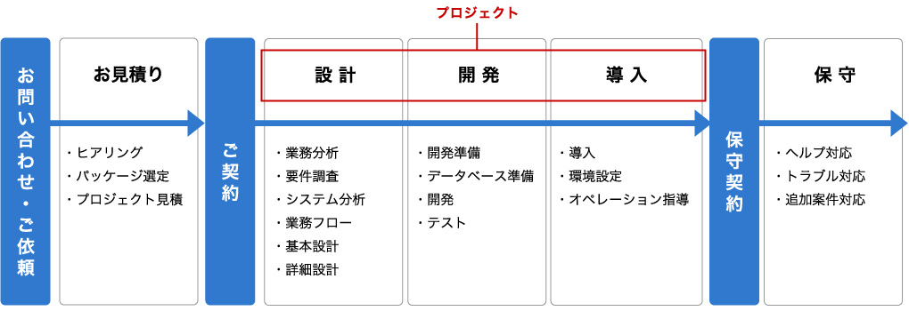

- ITコンサルティング
- プロジェクトマネジメント
- システム開発
- 運用・保守
TWBのプロジェクトマネジメント
プロジェクトをどのように遂行するか計画を行い、プロジェクトの目的を達成できるようにコントロールしていく事が必要です。
しかしシステム開発プロジェクトをトラブルなく、計画通りに進めることは容易なことではありません。
プロジェクトマネジメントにおいては納期(スケジュール)・品質・費用(コスト)が重要な管理の視点であり、それぞれのバランスを取りな
がら進めていく必要があります。
ご依頼 ～ 保守までのプロジェクト例
